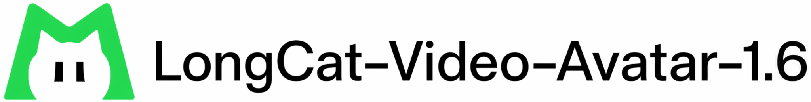

LongCat-Video-Avatar-1.6

---
🚀 Model Introduction
We are excited to announce the release of LongCat-Video-Avatar 1.6, the latest upgrade to our open-source framework for audio-driven human video generation. Building upon LongCat-Video-Avatar 1.5, 1.6 improves expressive naturalness, lip–audio synchronization, coordinated facial and body motion, and visual consistency during long-form generation. It also introduces comprehensive inference optimizations for faster and more efficient deployment.
Key Features
- 🌟 More Natural and Stable Lip Animation:: Reduces exaggerated or strained mouth movements, overly red lip coloration, and temporal instability in the mouth region.
- 🌟 Stable Long-Video Generation: Mitigates error accumulation during autoregressive video continuation, enabling videos exceeding 10 minutes while preserving visual quality, identity consistency, and temporal coherence.
- 🌟 Faster End-to-End Inference: Accelerates video generation through end-to-end pipeline and model execution optimizations, enabling more efficient deployment and serving.
For more detail, please refer to the comprehensive ***LongCat-Video-Avatar-1.6 Technical Report***.
🌀 Preview Gallery
LongCat-Video-Avatar 1.6 delivers more natural lip movements and expressive motion while maintaining visual quality and temporal consistency in videos exceeding 10 minutes.
| [▶ 官方演示视频](https://www.modelscope.cn/models/meituan-longcat/LongCat-Video-Avatar-1.6/resolve/master/assets/1.mp4) | [▶ 官方演示视频](https://www.modelscope.cn/models/meituan-longcat/LongCat-Video-Avatar-1.6/resolve/master/assets/2.mp4) |
| [▶ 官方演示视频](https://www.modelscope.cn/models/meituan-longcat/LongCat-Video-Avatar-1.6/resolve/master/assets/3.mp4) | [▶ 官方演示视频](https://www.modelscope.cn/models/meituan-longcat/LongCat-Video-Avatar-1.6/resolve/master/assets/4.mp4) |
| [▶ 官方演示视频](https://www.modelscope.cn/models/meituan-longcat/LongCat-Video-Avatar-1.6/resolve/master/assets/5.mp4) | |
| [▶ 官方演示视频](https://www.modelscope.cn/models/meituan-longcat/LongCat-Video-Avatar-1.6/resolve/master/assets/6.mp4) | |
📊 Human Evaluation
We compare LongCat-Video-Avatar 1.6 with its predecessor LongCat-Video-Avatar 1.5 and four commercial systems: OmniHuman-2.0, HeyGen, OmniHuman-1.5, and Kling Avatar 2.0. The all-pairs human preference study comprises 33,051 valid individual votes across all 15 model pairings. LongCat-Video-Avatar 1.6 ranks second among six evaluated systems in a human preference Arena comprising 33,051 valid individual votes. With a Bradley–Terry Elo score of 1068.1, it ranks behind OmniHuman-2.0 and ahead of LongCat-Video-Avatar 1.5, HeyGen, OmniHuman-1.5, and Kling Avatar 2.0.

💡 Quick Start
Clone the repo
shellgit clone --single-branch --branch main https://github.com/meituan-longcat/LongCat-Video cd LongCat-Video
Install dependencies
shell# create conda environment conda create -n longcat-video python=3.10 conda activate longcat-video # install torch (configure according to your CUDA version) pip install torch==2.6.0+cu124 torchvision==0.21.0+cu124 torchaudio==2.6.0 --index-url https://download.pytorch.org/whl/cu124 # install flash-attn-2 pip install ninja pip install psutil pip install packaging pip install flash_attn==2.7.4.post1 # install other requirements pip install -r requirements.txt # install longcat-video-avatar requirements conda install -c conda-forge librosa conda install -c conda-forge ffmpeg pip install -r requirements_avatar.txt
FlashAttention-2 is enabled in the model config by default; you can also change the model config to use FlashAttention-3 or xformers.
⛽️ Model Download
| Models | Description | Download Link |
|---|---|---|
| LongCat-Video | foundational video generation | 🤗 Huggingface |
| LongCat-Video-Avatar-1.6 | single- and multi-character audio-driven video generation | 🤗 Huggingface |
Download models using huggingface-cli:
shellpip install "huggingface_hub[cli]" huggingface-cli download meituan-longcat/LongCat-Video --local-dir ./weights/LongCat-Video huggingface-cli download meituan-longcat/LongCat-Video-Avatar-1.6 --local-dir ./weights/LongCat-Video-Avatar-1.6
🔑 Quick Inference
Usage Tips
1. Checkpoint composition and LoRA mixing
LongCat-Video-Avatar 1.6 uses the same base architecture as
LongCat-Video-Avatar 1.5 and includes two task-specific LoRA adapters:
-loraA/lora.safetensors: DMD LoRA.
-loraB/lora.safetensors: OPSD LoRA.
The checkpoint package also providesbase_model_int8, an optional
weight-only INT8 DiT that can be enabled with--use_int8.
With--mix_steps=N, the firstNdenoising steps usemix_alpha * DMD + (1 - mix_alpha) * OPSD, while the remaining8 - Nsteps use OPSD only. Increasing--mix_stepsor--mix_alphagives the DMD LoRA greater influence during the early
denoising steps, which may improve structural stability and reduce
visual distortions.
With the default settings,--mix_steps=4 --mix_alpha=1.0, the first
four denoising steps use DMD only, and the remaining four steps use
OPSD only.
2. FP8 dependency and INT8 exclusivity
Install Transformer Engine with PyTorch and CUDA support before enabling--use_fp8. Do not use--use_fp8and--use_int8simultaneously;
enable only one quantization mode at a time. If output quality is the
priority, reduce the number of layers using FP8.
3. Compilation warm-up
When--compile_ditand--compile_vaeare enabled, the first few
inference runs include graph-tracing and compilation overhead and may
therefore be slower. Subsequent runs with the same input shapes reuse
the compiled graphs and are significantly faster. New input shapes may
trigger recompilation.
4. FlashAttention 3
For Hopper GPUs such as the H20, H100, H200, and H800, install and enable
FlashAttention 3. FA3 can provide a significant inference speedup over
FA2. Confirm that the model configuration contains:
```json
{
"enable_flashattn3": true,
"enable_flashattn2": false
}
```
5. Multi-GPU communication
When running on more than two GPUs, enable the optimized All-to-All
workspace to reduce context-parallel communication overhead:
```shell
export LONGCAT_A2A_WORKSPACE=1
```
Set--nproc_per_nodeand--context_parallel_sizeto the number of
GPUs used for inference.
Single-Person Animation
shell# Speech-Text-to-Video torchrun --nproc_per_node=2 run_demo_avatar_single_audio_to_video.py --context_parallel_size=2 --checkpoint_dir=./weights/LongCat-Video-Avatar-1.6 --stage_1=at2v --input_json=assets/avatar/single_example_1.json --use_distill --lora_path loraB/lora.safetensors --model_type avatar-v1.6 --mix_steps=4 --mix_alpha=1.0 # Speech-Image-to-Video torchrun --nproc_per_node=2 run_demo_avatar_single_audio_to_video.py --context_parallel_size=2 --checkpoint_dir=./weights/LongCat-Video-Avatar-1.6 --stage_1=ai2v --input_json=assets/avatar/single_example_1.json --use_distill --lora_path loraB/lora.safetensors --model_type avatar-v1.6 --mix_steps=4 --mix_alpha=1.0 # Speech-Text-to-Video and Video-Continuation torchrun --nproc_per_node=2 run_demo_avatar_single_audio_to_video.py --context_parallel_size=2 --checkpoint_dir=./weights/LongCat-Video-Avatar-1.6 --stage_1=at2v --input_json=assets/avatar/single_example_1.json --num_segments=5 --ref_img_index=10 --mask_frame_range=0 --use_distill --lora_path loraB/lora.safetensors --model_type avatar-v1.6 --mix_steps=4 --mix_alpha=1.0 # Speech-Image-to-Video and Video-Continuation torchrun --nproc_per_node=2 run_demo_avatar_single_audio_to_video.py --context_parallel_size=2 --checkpoint_dir=./weights/LongCat-Video-Avatar-1.6 --stage_1=ai2v --input_json=assets/avatar/single_example_1.json --num_segments=5 --ref_img_index=10 --mask_frame_range=0 --use_distill --lora_path loraB/lora.safetensors --model_type avatar-v1.6 --mix_steps=4 --mix_alpha=1.0
Multi-Person Animation
shell# Speech-Image-to-Video torchrun --nproc_per_node=2 run_demo_avatar_multi_audio_to_video.py --context_parallel_size=2 --checkpoint_dir=./weights/LongCat-Video-Avatar-1.6 --input_json=assets/avatar/multi_example_1.json --use_distill --lora_path loraB/lora.safetensors --model_type avatar-v1.6 --mix_steps=4 --mix_alpha=1.0 # Speech-Image-to-Video and Video-Continuation torchrun --nproc_per_node=2 run_demo_avatar_multi_audio_to_video.py --context_parallel_size=2 --checkpoint_dir=./weights/LongCat-Video-Avatar-1.6 --input_json=assets/avatar/multi_example_1.json --num_segments=5 --ref_img_index=10 --mask_frame_range=0 --use_distill --lora_path loraB/lora.safetensors --model_type avatar-v1.6 --mix_steps=4 --mix_alpha=1.0
⚖️ License Agreement
The model weights are released under the MIT License.
Any contributions to this repository are licensed under the MIT License, unless otherwise stated. This license does not grant any rights to use Meituan trademarks or patents.
See the LICENSE file for the full license text.
🧠 Usage Considerations
This model has not been specifically designed or comprehensively evaluated for every possible downstream application.
Developers should take into account the known limitations of large language models, including performance variations across different languages, and carefully assess accuracy, safety, and fairness before deploying the model in sensitive or high-risk scenarios. It is the responsibility of developers and downstream users to understand and comply with all applicable laws and regulations relevant to their use case, including but not limited to data protection, privacy, and content safety requirements.
Nothing in this Model Card should be interpreted as altering or restricting the terms of the MIT License under which the model is released.
📖 Citation
We kindly encourage citation of our work if you find it useful.
code@misc{meituanlongcatteam2026longcatvideoavatar16technicalreport, title={LongCat-Video-Avatar 1.6 Technical Report}, author={Meituan LongCat Team}, year={2026}, eprint={}, archivePrefix={arXiv}, primaryClass={cs.CV}, url={}, }
🙏 Acknowledgements
We would like to thank the contributors to the Wan, UMT5-XXL, Diffusers and HuggingFace repositories, for their open research.
📞 Contact
Please contact us at longcat-team@meituan.com or join our WeChat Group if you have any questions.